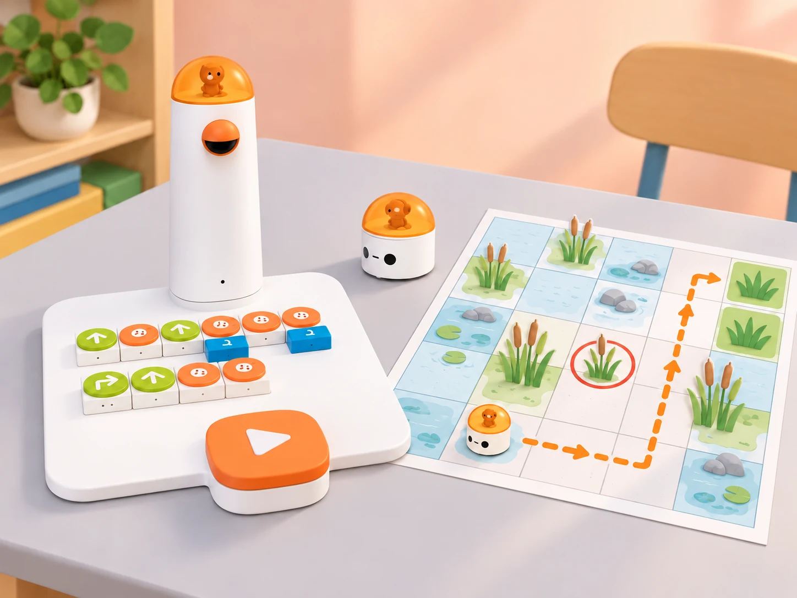

Una ruta segura per la marjal
🏷️ Marjal i cura dels hàbitats
🌱 Situació, repte i intenció
Aquesta proposta adapta la lliçó oficial de Matatalab “The Wolf is Coming!” (lliçó 3), que introdueix el concepte d’obstacle, la planificació d’una ruta prèvia, la codificació d’un camí amb blocs direccionals, el treball en dos equips que intercanvien tasques i un repte final de permutacions. El context de la marjal, els personatges, els mapes i els casos de prova són propis. La lliçó oficial proposa una exploració de 40 minuts;
ací es distribueix en tres sessions de 45 minuts per a permetre predicció, rotació de rols, depuració i comunicació a una altra parella. No es reprodueixen les pàgines ni les il·lustracions del material oficial.
🎯 Aprenentatges i vocabulari
- Identificar inici, destinació, orientació, obstacle representat i ruta possible en una graella.
- Planificar el recorregut abans de col·locar blocs, anticipant la posició i l’orientació després de cada ordre.
- Traduir una ruta a blocs direccionals del Coding Set, executar-la i comparar el resultat amb la predicció.
- Depurar una seqüència canviant una instrucció cada vegada i registrar què ha canviat.
- Repartir i intercanviar els rols de disseny del mapa, programació, comprovació i portaveu.
- Explicar per què una ruta és segura dins del mapa i distingir aquesta decisió humana de les capacitats del robot.
Vocabulari clau: casella, fila, columna, inici, destinació, orientació, obstacle, ruta, instrucció, seqüència, predicció, prova i depuració.
🧰 Materials i preparació
- Coding Set del centre: MatataBot, torre de control, tauler de programació i blocs direccionals disponibles. Carregueu els dispositius, comproveu la connexió i executeu una instrucció senzilla abans de la sessió.
- Dues graelles pròpies de 5 × 5 caselles. Per a moure físicament el robot, marqueu caselles de 10 × 10 cm i confirmeu el desplaçament amb una prova del vostre model; una graella de paper més menuda només serveix per a planificar o simular.
- Targetes de paper amb una granota, dos punts d’aigua, dues zones de vegetació i una zona protegida. L’obstacle és una marca del mapa: el robot no el reconeix ni l’evita automàticament. Manteniu lliure el recorregut físic i no col·loqueu barreres que puguen fer caure o bloquejar el robot.
- Full de registre amb quatre columnes: pas, posició i orientació previstes, resultat observat, canvi provat. Afegiu-hi targetes amb les ordres que tinga realment el kit.
Formeu equips de quatre. En cada parella, una persona prepara el mapa i l’altra programa; les dues persones revisen conjuntament la ruta. Després de la primera missió, intercanvien la funció de disseny i programació amb l’altra parella. Ajusteu els blocs a l’inventari del centre: si el model no té algun moviment, representeu-lo en paper i no el presenteu com una prova física.
📅 Seqüència didàctica
Llegim el mapa i planifiquem sense travessar la zona protegida (45 min)
Fase 1 · Activem i prediem
Mostreu una graella amb inici, destinació i una zona protegida marcada. Pregunteu si hi ha més d’un camí possible i demaneu que assenyalen quines caselles no pot travessar la ruta acordada. Recolliu prediccions sense encendre encara el robot.
Fase 2 · Explorem i construïm
En equips de quatre, assigneu rols de cartògraf/a, planificador/a, verificador/a i portaveu. La parella planificadora traça amb llapis una ruta casella a casella; la parella verificadora recorre el mapa amb una fitxa i comprova que no passa per la zona protegida ni ix de la graella. Si una ruta no és viable, marqueu la primera casella que causa el problema.
Fase 3 · Expliquem i registrem
Anoteu cada canvi de direcció en una seqüència de fletxes i indiqueu la direcció inicial de MatataBot. Compteu els moviments entre caselles i distingiu-los dels girs: un gir canvia l’orientació, però no trasllada el robot a una casella veïna.
Fase 4 · Apliquem i millorem
Intercanvieu la ruta amb un altre equip sense explicar-la oralment. L’equip receptor ha de poder reconstruir el recorregut només amb la graella, el punt d’inici, l’orientació i la seqüència. Afegiu al mapa la informació que falte.
Fase 5 · Comprovem i reflexionem
Convertim dues rutes en programes i canviem els rols (45 min)
Fase 1 · Activem i prediem
Presenteu dos reptes amb el mateix inici però destinacions diferents. Cada parella tria una ruta segura i escriu la predicció abans de tocar els blocs. Repasseu la col·locació inicial i l’orientació del robot.
Fase 2 · Explorem i construïm
La primera parella construeix el programa al tauler i el llig en veu alta; la segona comprova bloc per bloc que correspon a la ruta del mapa. Executeu el programa només quan les dues parelles l’hagen validat. Després, canvieu els rols i resoleu la segona destinació amb un altre mapa.
Fase 3 · Expliquem i registrem
Després de cada prova, anoteu l’última posició correcta i la primera discrepància. Si el robot no arriba, compareu la seqüència amb el mapa i canvieu una sola instrucció abans de repetir. Torneu MatataBot a la mateixa casella i orientació inicial abans de cada execució.
Fase 4 · Apliquem i millorem
Feu que cada parella reba el programa de l’altra sense veure la ruta dibuixada. Ha d’anticipar el destí, provar-lo i després comparar la predicció amb el resultat. Si hi ha una diferència, expliqueu si prové del mapa, de l’orientació inicial, de la lectura dels blocs o de l’execució.
Fase 5 · Comprovem i reflexionem
Depurem i resolguem un repte de permutacions (45 min)
Fase 1 · Activem i prediem
Col·loqueu quatre targetes d’hàbitat en quatre caselles identificades. Expliqueu que, en el repte final, dues targetes canviaran de lloc i que caldrà decidir quines configuracions són possibles sense repetir cap casella. Distingiu aquest problema de classificació del moviment del robot.
Fase 2 · Explorem i construïm
Cada equip rep una configuració inicial i dues targetes intercanviables. Proposeu quatre configuracions candidates; l’alumnat les prova físicament amb les targetes i descarta les que deixen una casella duplicada o buida quan el repte exigeix una targeta per casella. Després, trieu una configuració vàlida i planifiqueu una ruta que visite les destinacions en l’ordre acordat.
Fase 3 · Expliquem i registrem
Programeu una ruta curta cap a les destinacions triades. La persona observadora registra l’ordre de visita i el resultat. Si la seqüència falla, depureu-la pas a pas; no canvieu alhora la disposició de targetes i el programa.
Fase 4 · Apliquem i millorem
Presenteu el mapa i una ruta a una parella visitant. Aquesta ha d’explicar quina configuració ha triat, reconstruir les instruccions i verificar la destinació. Incorporeu una millora només si resol una confusió observada durant aquesta prova.
Fase 5 · Comprovem i reflexionem
Evidència final: mapa amb llegenda, una configuració de targetes justificada, programa comprovat i explicació breu d’una depuració. Tanqueu amb la pregunta: quina part de la decisió sobre la zona protegida ha fet l’alumnat i quina part ha fet el robot?
🧪 Evidències i avaluació
- Planificació: el mapa inclou inici, orientació, destinació, zona protegida i una ruta contínua.
- Programació: la seqüència de blocs correspon a la ruta que l’equip ha anunciat.
- Revisiól’alumnat localitza la primera discrepància i prova un canvi controlat.
- Comunicació: una altra parella pot reconstruir el recorregut sense instruccions addicionals.
- Comprensió del robot: l’explicació separa les decisions humanes sobre el mapa de les ordres que MatataBot executa.
♿ Participació, accessibilitat i seguretat
- Oferiu graelles amb contrast alt, pictogrames, peces més grans i una versió de recorregut corporal o amb fitxa per a qui no puga manipular els blocs menuts.
- Permeteu anticipar la seqüència oralment, amb fletxes, amb una plantilla de posicions o amb suport d’una parella; els rols es poden adaptar sense perdre la rotació de responsabilitats.
- Manteniu mans i materials fora del trajecte durant l’execució. No poseu el robot sobre vores, superfícies inclinades ni obstacles físics; atureu la prova si queda bloquejat.
- La zona protegida és una convenció del mapa. El Coding Set base no disposa de detecció automàtica d’obstacles en aquesta activitat; cap moviment del robot demostra percepció ambiental.
- No feu servir ubicacions identificables de l’alumnat ni fotografies amb dades personals. Els llocs i animals del mapa són representacions educatives.
🔗 Referents i adaptació
- Matatalab, lliçó 3: “The Wolf is Coming!” (PDF oficial): treballa obstacles, planificació prèvia, seqüències direccionals, cooperació en parelles amb intercanvi de tasques i una activitat final de permutacions. La proposta conserva aquesta progressió didàctica, però crea un context de marjal, mapes, consignes i proves propis.
- La font descriu l’ús del Matatalab Coding Set. Les dimensions de 10 × 10 cm i la resposta als blocs s’han de validar amb el kit i la superfície concrets del centre abans de fer l’activitat física.
- La duració de tres sessions de 45 minuts, els indicadors d’avaluació i els materials de paper són decisions pròpies d’aquesta adaptació, no dades atribuïdes al fabricant.